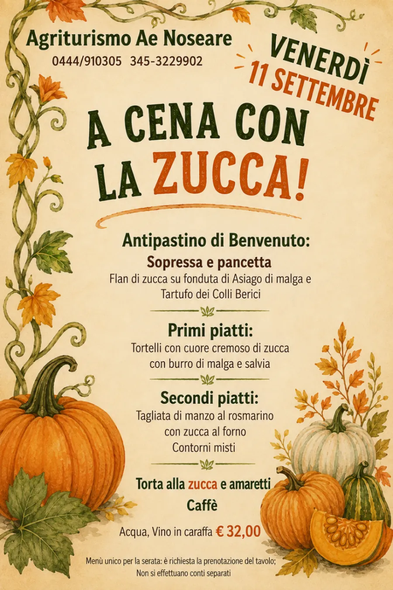

Agriturismo e fattoria didattica a Torri di Quartesolo, Vicenza
Ae Noseare
Mangiare sano, naturalmente.
La cucina riapre venerdì a cena
Qui comandano le stagioni. Antonietta e Mario hanno aperto l'agriturismo nel 2002 e oggi ci lavorano con Andrea, Claudia e Mattia: la pasta è fatta in casa, la sopressa è nostrana, i dolci escono dal loro forno. E fuori, tra il prato e la stalla, ci sono Cometa, Otto e tutti gli altri.
L'aia, in sette parole
Scegli da dove cominciare
La cucina
La tradizione vicentina, come si faceva a casa
L'agriturismo nasce dalla voglia di servire prodotti genuini, coltivati e allevati in azienda: cibo sano, naturale, di provenienza certa. In cucina ci sono Antonietta e Andrea, alla griglia Mattia, in sala Claudia, che sa consigliare il piatto giusto.
La cucina è aperta il venerdì e il sabato a cena e la domenica a pranzo. Nei giorni feriali solo su prenotazione. Nel ristorante non sono ammessi animali.
- La sopressa e la pancetta nostrane
- La pasta fresca fatta in casa
- La carne ai ferri di Mattia
- Lo spezzatino di musso
- I formaggi
- I dolci fatti in casa
Dalla cucina di Antonietta e Andrea


Dal menù e dalle serate
Ogni tanto la cucina fa festa da sola
Il menù cambia con le stagioni. Qualche piatto di quello attuale:
E ogni tanto c'è una serata a tema: menù unico, tavolo su prenotazione. L'ultima è stata «A cena con la zucca».

Le camere
Nove camere e la colazione di Antonietta
Tutte con bagno privato, aria condizionata, riscaldamento indipendente e televisore. Per gli ospiti ci sono la sala lettura, un ampio parcheggio e il parco. Si dorme e si fa colazione; il ristorante è aperto nel fine settimana.
Al mattino Antonietta prepara caffè, latte, brioches, marmellate, pane, fette biscottate, yogurt e frutta fresca. Per altre richieste basta chiedere.
Camera singola da 50 €, doppia da 75 €, tripla da 95 € a notte, colazione compresa. I prezzi sono indicativi e cambiano con la stagione.


0camere con bagno privato
0l'anno in cui è nato l'agriturismo
0l'anno dell'azienda agricola dei nonni
0chilometri dal centro di Vicenza
La fattoria
Galline, asinelli e una cavalla che si chiama Cometa
L'azienda agricola è nata nel 1970 dalla passione dei nonni e oggi la porta avanti Mario. Se volete sapere tutto sugli animali, chiedete a lui: vi racconterà questo mondo per bene.


foto da fareCometa e Otto nel prato, di pomeriggio, con la casa gialla sullo sfondo

Fattoria didattica
Accreditata dalla Regione del Veneto
Per le scuole proponiamo percorsi diversi, per bambini dai tre anni in su. Chiedeteci il programma.
Ogni estate Claudia e Michela, con l'aiuto di tutta la famiglia, organizzano i centri estivi e le settimane verdi per bambini dai sei ai dodici anni.
foto da fareUna classe in visita: i bambini con Mario davanti alla stalla, o alla ricerca delle uova
La famiglia
Tre generazioni nello stesso cortile
I nonni avviano l'azienda agricola. Mario la porta avanti ancora oggi, insieme agli animali.
Antonietta e Mario aprono l'agriturismo, per amore della natura e degli animali.
Antonietta e Andrea in cucina, Mattia alla griglia, Claudia in sala, Michela ai centri estivi. Una famiglia sola.
Lo spaccio
La casetta di legno accanto all'agriturismo
Prodotti locali da portare a casa o da regalare ad amici e parenti: vi consigliamo noi cosa scegliere.
Formaggi freschi e stagionati
dal tagliere allo scaffaleSopresse, salami e pancette
nostranePasta fresca fatta in casa
tagliatelle e verdiConfetture
con la frutta di stagioneIl distributore Latterie Vicentine
Yogurt, mozzarelle, stracchini, tosella, burro, Grana e molto altro, a ogni ora. Il latte, intero o parzialmente scremato, costa 1,20 € la bottiglia.

Le feste
Battesimi, comunioni, cresime, compleanni
Per festeggiare da noi una ricorrenza, o anche solo una serata in buona compagnia, basta una telefonata. La sala è a disposizione anche per riunioni ed eventi.

I dintorni
Vicenza a dieci minuti, e poi Marostica, Verona, Padova, Venezia
Il centro storico di Vicenza, con le architetture di Andrea Palladio, è a circa dieci minuti. Su richiesta vi diamo gli orari dei treni e, avvisandoci per tempo, vi accompagniamo in stazione.

Vicenza
Le architetture di Palladio

Marostica
La piazza degli scacchi

Verona
L'Arena e il lago di Garda vicino

Padova
La basilica di Sant'Antonio

Venezia
La laguna, dal Ponte della Libertà
Le nostre certificazioni
Contatti
Venite a trovarci
Dove
Via Adige 37, Marola
36040 Torri di Quartesolo (VI)
a pochi minuti dal casello di Vicenza Est
Telefono
Scrivi
Quando
La cucina: venerdì e sabato a cena, domenica a pranzo.
Le camere: tutto l'anno, con colazione.